Your feed and library
Listen again, Quick picks, your mixes and mood filters, plus liked songs, saved albums, playlists and history once you sign in.
ytm-rs is a native YouTube Music app for Windows, macOS and Linux, written in Rust. Word-by-word synced lyrics, romanization and 26 themes in a 9 MB download that draws nothing at all when you aren't looking.
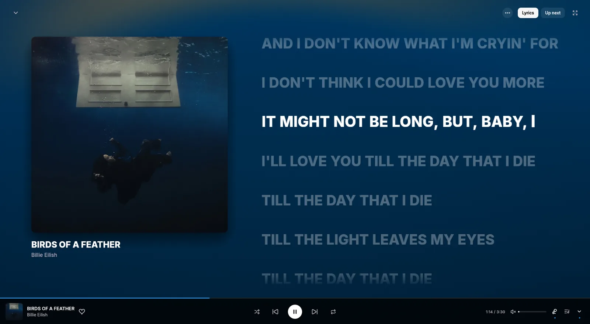
Measured with v0.2.12 on Windows 11: private memory with a song playing (about 80 MB idle, 102 MB with lyrics open), and frames drawn with the window idle.
Features
Your feed, your library and your playlists, in a small native app that stays out of the way.
Listen again, Quick picks, your mixes and mood filters, plus liked songs, saved albums, playlists and history once you sign in.
Loudness normalization, the next song loaded ahead for instant skips, and 256 kbps audio with Premium. Queue, radio, shuffle, repeat and autoplay included.
Save any song as a tagged .m4a with its cover art, at the best quality your account gets. Downloaded songs play from the file, even offline.
Drop MP3, M4A, FLAC, OGG or WMA files on the window. They go to your YouTube Music library, tags and cover art included.
Media keys and system media controls on Windows, macOS and Linux, close to tray, Discord Rich Presence and Last.fm scrobbling.
New versions download in the background and install when you close the app, with release notes written by a person.
Listen together
Start a jam and share the code or the link. Friends who open it land straight in ytm-rs and hear what you're playing at the same moment, each streaming it on their own.
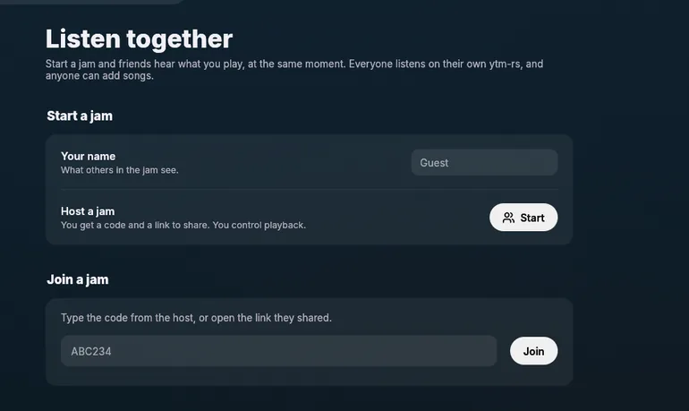
Transfer from Spotify
Pick a playlist or your Liked Songs, or paste any public playlist link, and keep listening while ytm-rs finds every song on YouTube Music.
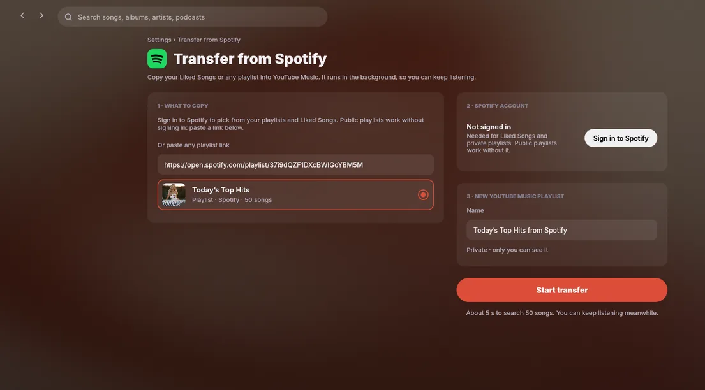
Any language
Japanese, Korean, Chinese and other non-Latin lyrics get romanization and a translation in their own rows under every line, filling in word by word as they're sung.
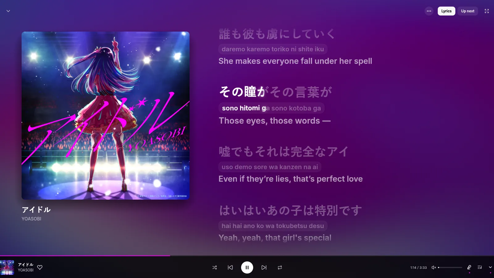
Browse
Everything comes straight from YouTube Music, so your mixes and recommendations are the ones you already know. Keep scrolling and more loads in.
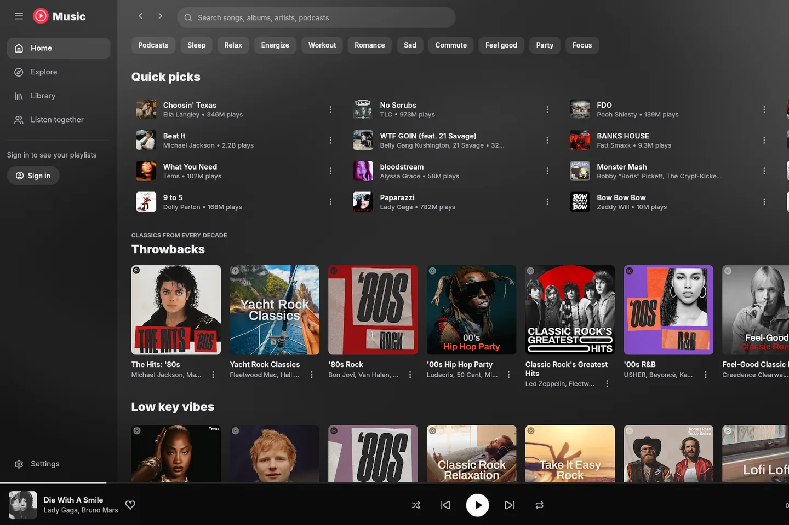
Synced lyrics
Words fill in as they're sung, the way the Better Lyrics extension draws them. Try it below with six of the app's lyric styles, using the same numbers as its theme presets.
The demo plays the lyrics of さくら さくら (Sakura Sakura), a traditional Japanese folk song in the public domain. In the app, lyrics come from every source Better Lyrics uses, with the next one taking over when a source has nothing. Translations come from the lyrics when included, otherwise from Unison or Google Translate. Source, romanization, translation and timing controls sit next to Lyrics in the now-playing view.
Themes
The Better Lyrics community made these as CSS for the browser. ytm-rs translates each one into native rendering: its lyrics, warped backdrop, cover, player bar, fonts and the rest of the app. Every theme credits its creators.
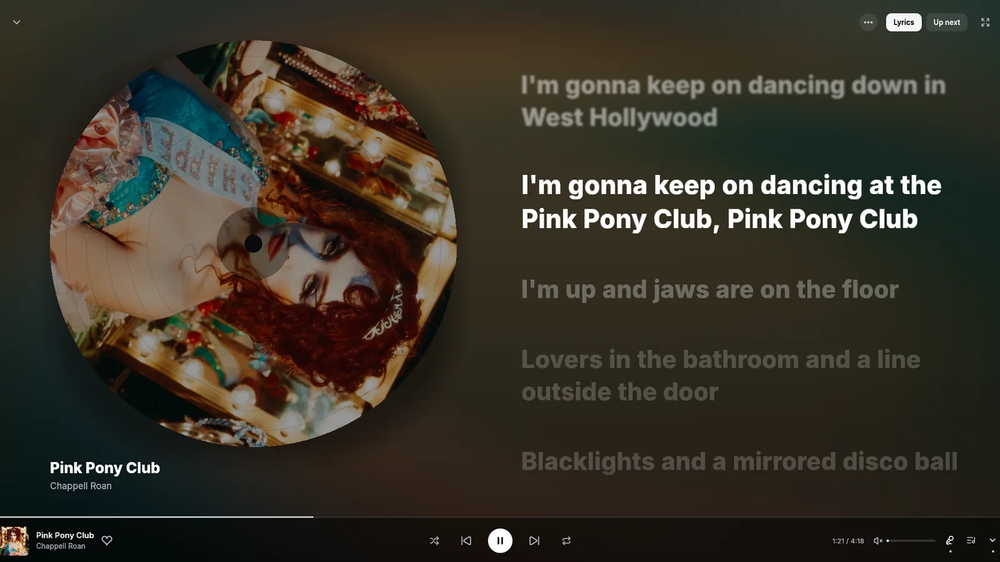
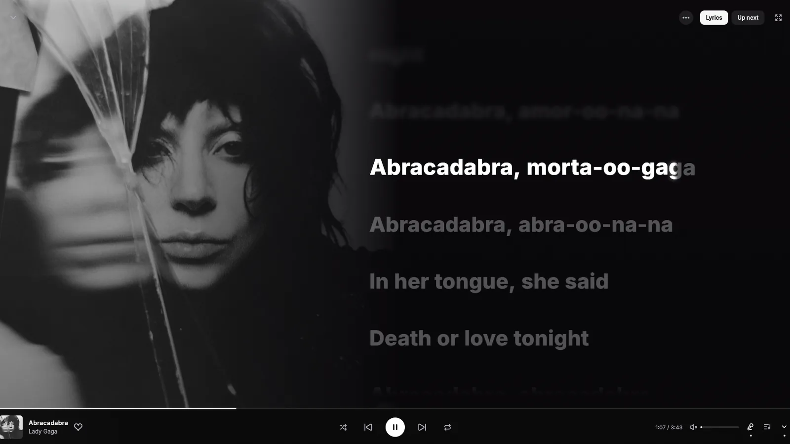
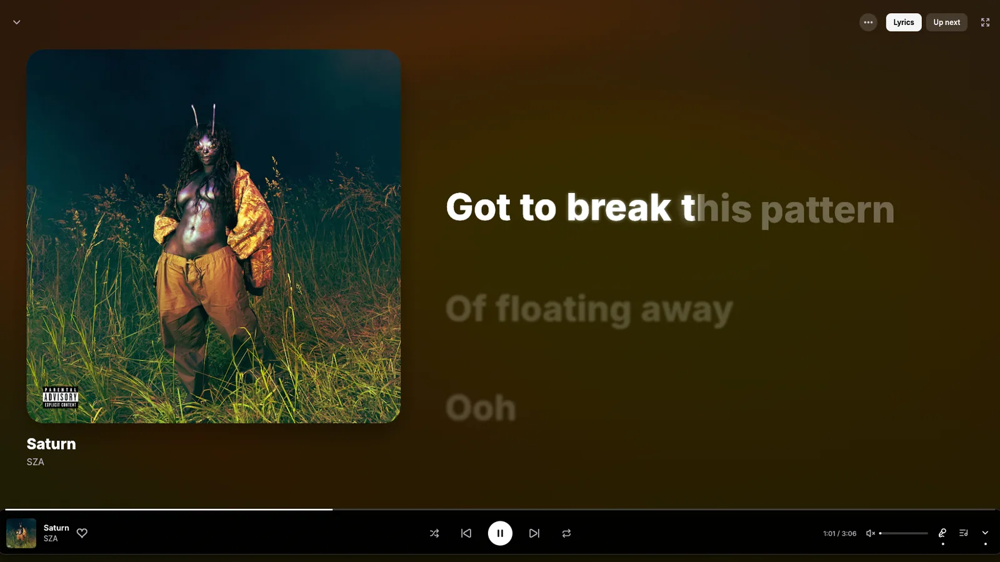
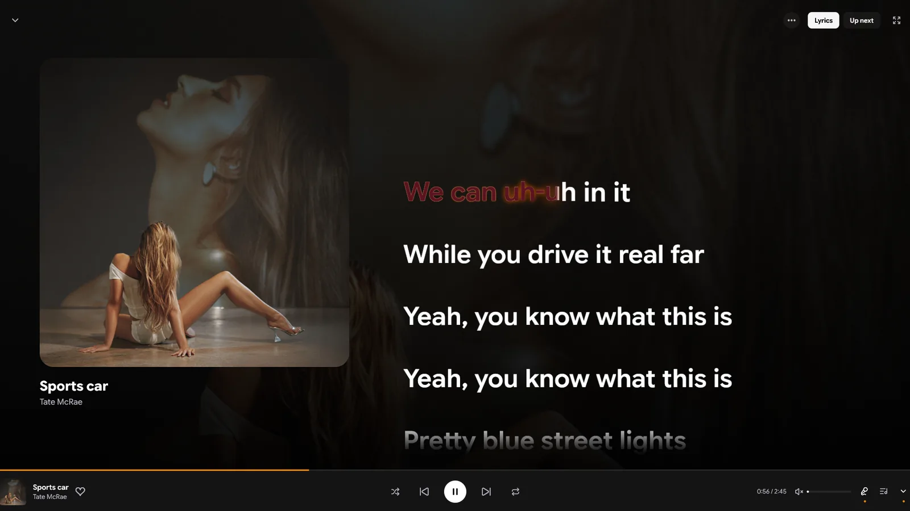
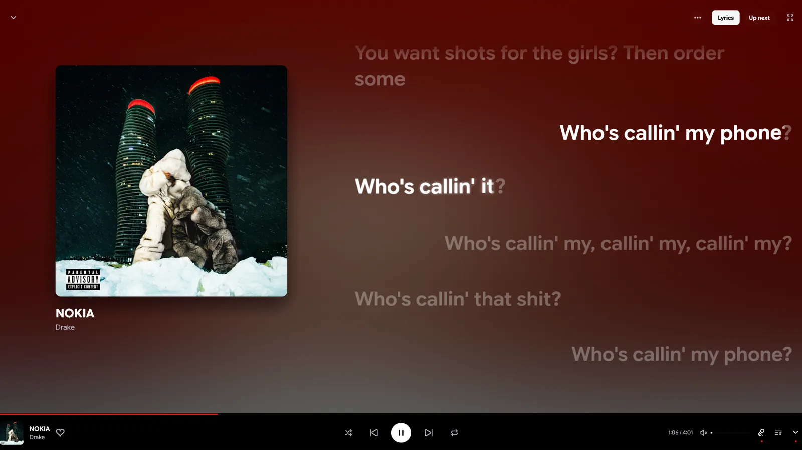
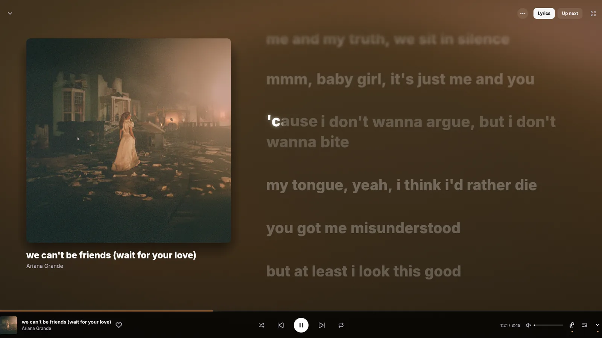
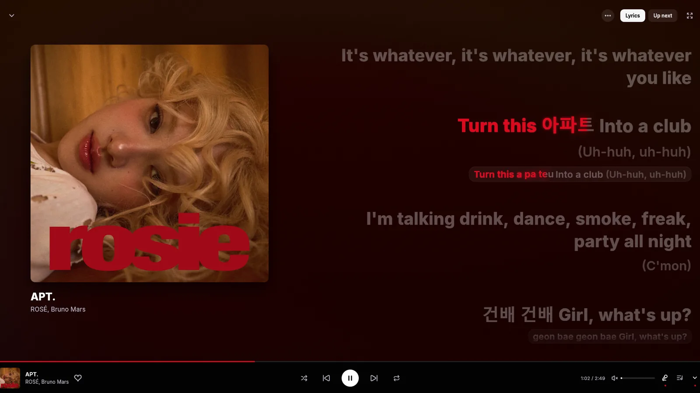
Under the hood
The interface is egui on OpenGL. Audio is rodio and Symphonia. Browsing goes straight to YouTube Music's own internal API. It all compiles into a single executable of about 20 MB.
Playback asks YouTube's player endpoint as the visionOS client. It hands back plain stream URLs that allow any byte range, so there's no signature puzzle to solve first. If YouTube returns a 403 halfway through a song, the stream gets a fresh URL and keeps going.
Signed-in Premium streams need YouTube's player JavaScript solved. ytm-rs runs yt-dlp's EJS solver in an embedded QuickJS. The older engine took 16 minutes to prepare one player. rquickjs 0.14 takes about 5 seconds, once per player version.
Opening an MP4 for seeking normally means reading every fragment first. ytm-rs starts on a streaming decoder right away, then swaps in a seekable one built over the same buffer the moment you seek.
egui lays out the whole window on every frame, so frames cost CPU. Browsing runs at 15 fps and now playing at 30, except while a lyric line fills, which gets every frame so the sweep stays smooth. When nothing moves, nothing gets drawn.
The warped album-art background is a native shader port of Kawarp from Better Lyrics, and it reacts to the music. The backgrounds on this page run a WebGL version of the same idea.
The lyrics renderer is a port of Better Lyrics. The glow is a real blur of the lit letters, never a box behind them, and theme blur is rendered properly instead of stacked fake copies. CJK lines render bold, shifted onto the same baseline as Latin text.
v0.2.25 · October 2026 · Free and open source
Every platform also has a portable download. ytm-rs updates itself on all of them. All downloads
$ curl -fsSL https://raw.githubusercontent.com/grapedjuice/ytm-rs/main/linux/install.sh | shInstalls for your user in ~/.local/lib/ytm-rs, with a ytm-rs command and an app menu entry. Build from source
FAQ
Yes. ytm-rs is free and open source under the GPL-3.0 license. The app has no ads, accounts or paid tiers of its own.
No. ytm-rs is an unofficial client built by an independent developer. It talks to the same services music.youtube.com uses, so changes on YouTube's side can occasionally affect playback, sign-in or lyrics.
No. You can browse, search and play without signing in. Signing in unlocks your home feed, library, likes and history. If your account has Premium, Premium-only songs play natively and everything plays at 256 kbps.
Yes. Every release has a Windows installer, a macOS disk image for Apple silicon and Intel (macOS 11 or later), and a Linux build with a one-line installer. Each platform also has a portable download. The macOS app isn't notarized yet, so the first time, right-click it and choose Open.
Open Settings → Sign in with Google. Google's own sign-in page opens in a temporary system webview window (WebView2 on Windows), and the session stays on your computer, in Credential Manager, the Keychain or your keyring. The player itself never runs in a webview.
Synced lyrics come from every source the Better Lyrics extension uses: Better Lyrics, Unison, Musixmatch, LRCLib and others. If one has nothing for a song, the next takes over. Romanization and translations come from the lyrics when they include them, otherwise from Unison or Google Translate. Machine translations can have rough spots.
The installed app checks GitHub for new releases, downloads them in the background and installs when you close it. Choose Restart to update to install right away, or turn updates off in Settings → Updates.